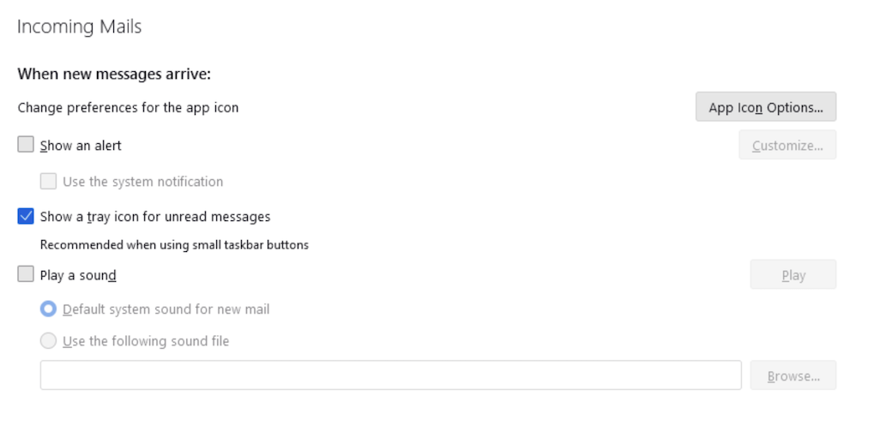
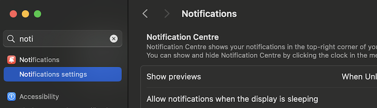
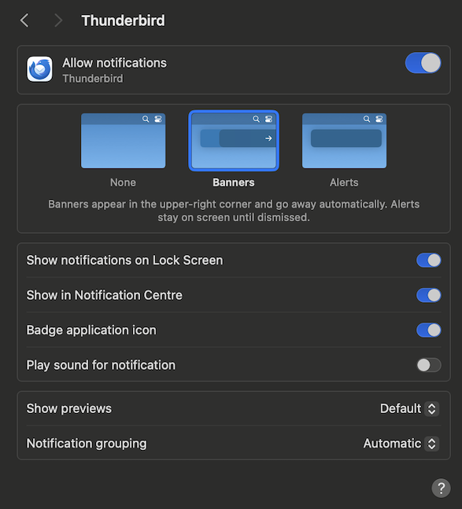
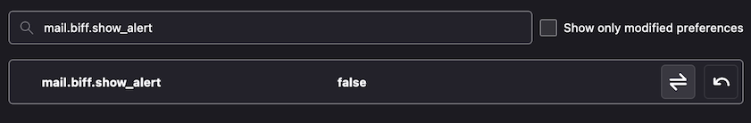
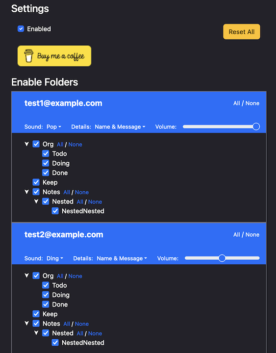
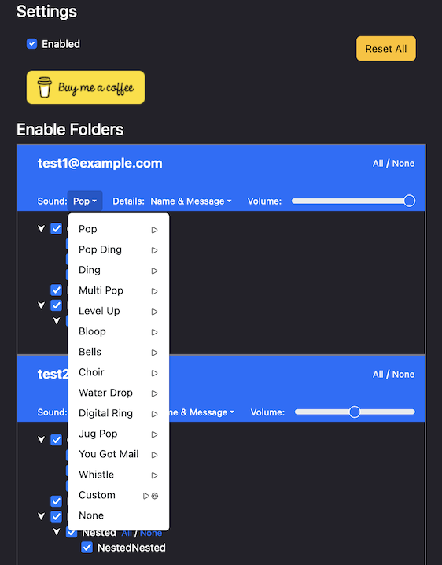

Configure Your System
As NTFNTF takes over notification and alerting responsibilities for mail, you need to disable the existing functionality for Thunderbird. This differs by Operating System.
Windows and Linux
- Open Thunderbird Settings
- Under General, scroll down to the "Incoming Mail" section
- If on Windows, enable "Use the system notification"
- Disable the following:
- Show and Alert
- Play a Sound
- You're now all set to configure which folders and accounts to alert for in the NTFNTF Extension settings. See "Usage".

Windows
MacOS
Mac is a little more involved to disable existing alerting as Thunderbird delegates the settings to MacOS. So we must disable there and also disable a setting hidden on the MacOS Thunderbird builds.
Disable System Sound Alerts for Thunderbird
- Open the MacOS System Settings
- Search for Notifications
- Choose "Notification settings"

- Scroll down and select Thunderbird from the list of apps
- Disable "Play sound for notification"

- Close out of System Settings
Disable Thunderbird Built-in Mail Notifications
- Open Thunderbird Settings
- Scroll all the way to the bottom of General
- Click the Config Editor button
- Search for
mail.biff.show_alert - Toggle this so it is set to False

- You're now all set to configure which folders and accounts to alert for in the NTFNTF Extension settings. See "Usage".
Usage
After installing the NTFNTF extension, configure it by navigating to the extension options within Thunderbird’s Add-on Manager. Here, you can select which folders you want to receive notifications for.


Global Settings
In this top section you can choose to disable the entire extension - this will keep your account and folder settings. You can also choose to Reset All which will set all folders and accounts back to defaults.
Account Settings
The various options should be fairly obvious. Choose your sound and notification details for each
account.
Use the All / None links to select or de-select all sub-folders.
Custom Sounds
Click the cog icon next to Custom, in each account's sound dropdown to choose an audio file for that account's alert sound.
Note that this gets uploaded into the extensions storage so you dont need to keep the original file.
Known Limitations
Local Folders are not supported
Local Folders and RSS feeds are unable to trigger notifications and so are filtered from the account list. This is unfortunately a limitation with Thunderbird's API and Im yet to think of a workaround.
Some Folders don't generate notifications
If a folder doesnt generate notifications it may be that messages are moved there before syncing to Thunderbird. You can try the following.
- Right click the affected folder
- Select
Properties - Check the box for
When getting messages for this account always check this folderand save